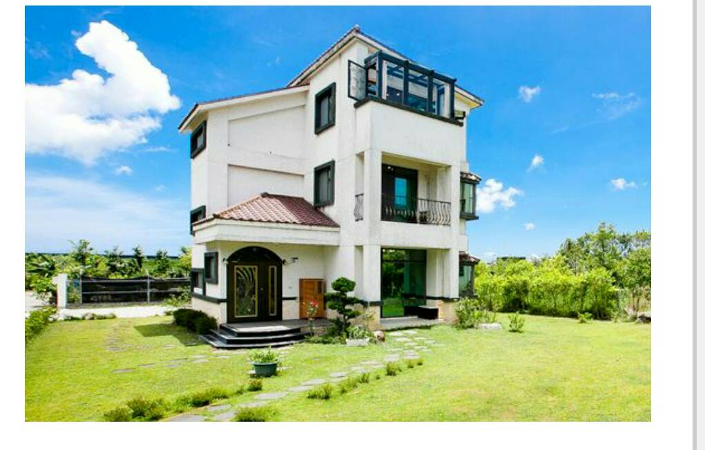

<div id="main-wrap">
<section class="legacy-section">
	<div class="legacy-section__inner">

		<div class="paragraph room-detail-title">住滿四間（12人）<br>Whole Building</div>

		<div class="room-baodong-row">
			
			<div class="room-baodong-notice">
				<p class="room-section-title">住宿須知 Notice</p>
				<p>獨棟庭園民宿。<br>提供2間雙人房+2間四人房<br>加人／加床費用另計。</p>
			</div>
		</div>

		<div class="wsite-spacer" style="height:26px;"></div>

		<div class="paragraph">
			<p class="room-section-title">客房設備 Facilities</p>
			<div class="room-facilities-list">
				◆免費wifi<br>
				◆提供腳踏車／嬰兒澡盆(小椅子)<br>
				◆公用客廳<br>
				◆民宿可烤肉，烤肉需付押金1000元（相關烤肉器具需自備／可代訂烤肉食材）<br>
				◆借用廚房需付押金1000元，如有做好清潔歸位與垃圾分類，現場會視情況退回<br>
				<br>
				<span style="font-size:14px;">（如須要借用場地、設備等，請於訂房時告知）<br>漫飛民宿感謝您的配合: )</span>
			</div>
		</div>

	</div>
</section>
</div><!-- end main-wrap -->
